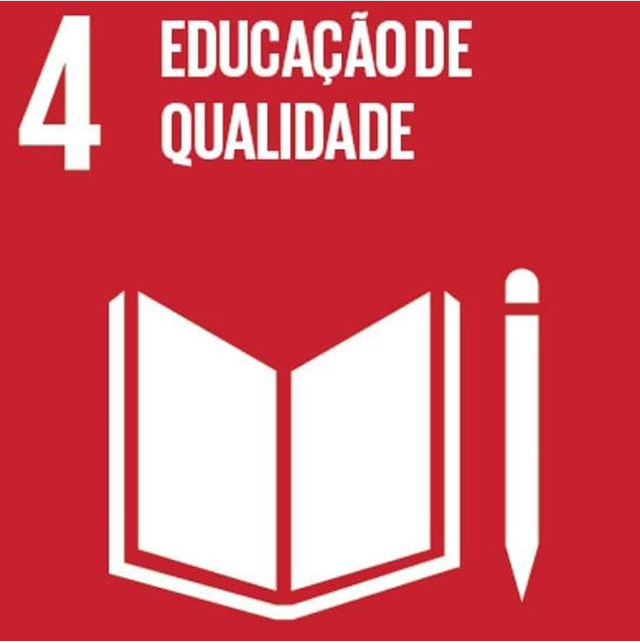

Atualmente, atuo como Assistente Administrativo, uma função que me proporcionou habilidades em organização, gestão de tempo e resolução de problemas. No entanto, minha verdadeira paixão está na área da Tecnologia da Informação. Estou cursando Análise e Desenvolvimento de Sistemas e busco oportunidades para aplicar meus conhecimentos, onde eu possa contribuir com inovação e soluções criativas, enquanto continuo a desenvolver minhas habilidades técnicas e expandir meu conhecimento.
Estou empolgada para continuar aprendendo e aplicar minhas habilidades em novos desafios no setor de tecnologia!
ODS que pretendo contribuir

Experiências Profissional
Extincop - Comércio de Extintores
Função: Auxiliar Administrativo
Período: 2023 - Atual
Descrição: Contribuo ativamente nas operações administrativas, demonstrando
habilidades em organização, comunicação e resolução de problemas
thayrine
Distribuidora Primavera - Máquinas e Equipamentos
Função: Repositora
Período: 2020 - 2022
Descrição: Desenvolvi habilidades em reposição de produtos, atendimento ao
cliente, caixa, auxiliar de vendas e conferência e notas fiscais, também fui
responsável pela divulgação de conteúdo snas mídias sociais e na rádio.
Formação Acadêmica
Universidade Tecnológica Federal do Paraná - (UTFPR)
Tecnologia em Análise e Desenvolvimento de Sistemas